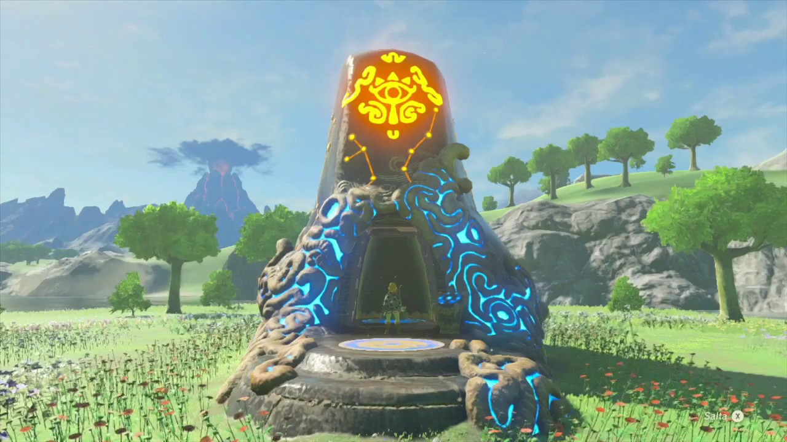
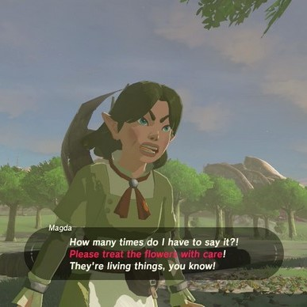

Dietro lo sviluppo di Magda ci sono due studenti universitari: Chiara Massari e Luca Repechini. Entrambi frequentiamo la facoltà di ingegneria informatica alla Sapienza, l'idea comune che ci ha condotto allo sviluppo di questa web-app è stata quella di fare qualcosa che non tenesse solo conto dell'utente, ma anche del mondo che lo circonda, dalle piante dentro casa fino all'intero pianeta. Annaffiare le piante può sembrarci un'azione di poco conto, ma teniamo sempre a mente che anche un battito d'ali di una farfalla può provocare un uragano.
L'idea del nome nasce dal videogioco preferito di uno di noi:
All'interno del gioco infatti sono presenti molti puzzle che prendono il nome di sacrari, uno in particolare ha catturato la nostra attenzione, quello di Hiro'Hira
Esso infatti è circondato da moltissimi fiori, la particolarità è che c'è un personaggio proprio di nome Magda a fare da guardia alla vegetazione. Se Link (il personaggio del gioco) calpesta uno dei fiori, Magda sarà pronta ad intervenire intimandolo di non farlo e di fare più attenzione.
Proprio per questo suo sforzo nella salvaguardia delle piante abbiamo deciso di dedicargli il nome del sito.